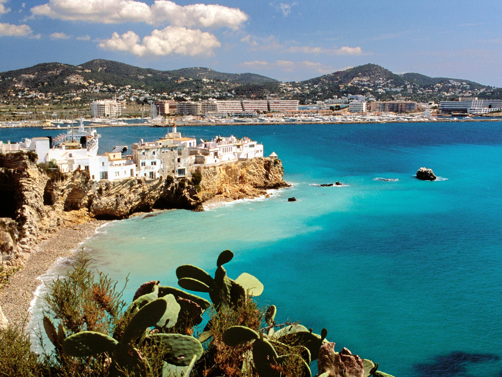

|
Introducere Repere geografice Clima Geografia politică Vegetația Fauna Relieful Rețeaua hidrografică |
ReliefulCea mai mare parte din Spania peninsulară se suprapune Mesetei Centrale, o zonă înaltă, mărginită și străbătută de catene montane. Alte forme de relief includ inguste zone litorale și câteva zone depresionare axate pe cursul unor râuri, din care cea mai extinsă este Câmpia Andaluziei. Țara poate fi împărțită în zece regiuniși subregiuni: Meseta Centrală, Cordiliera Cantabrică, zona Iberică, Munții Pirinei, zona Penibetică, Câmpia Andaluziei, Bazinul râului Ebro, câmpiile litorale, Insulele Baleare și Insulele Canare. Aceste regiuni se regăsesc de obicei grupate în patru mari zone: Meseta Centrală asociată cu munții care o mărginesc și străbat, alte zone montane, zonele joase și insulele. Cele mai importante dintre insulele ce aparțin Spaniei sunt cele Baleare (localizate în Marea Mediterană) și cele Canare (localizate în Oc. Atlantic). |